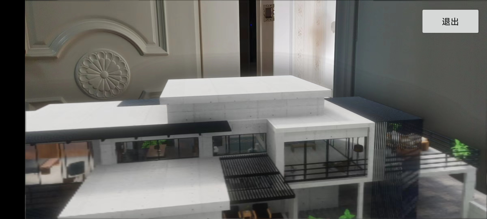

LarkXR-AR
简述
使用LarkXR SDK 可接入 arcore 或 hw arengine 实现云 AR 效果。
并且我们开源接入的项目LarkAR Demo以供二次开发参考。
LarkAR Demo 包括 AR Android 客户端（接入平行云 LarkXR SDK），一个 Unity3D 云端示例应用和一个 Unreal4.27 示例应用。
phone
------------------- ---------- ----------
| | | | | |
| arsdk(arcore...) | streaimg | LarkXR | manange | XR App |
| larkxrsdk | <=============>| Server |<=========>| OpenVR |
| | tracked pose | | | |
------------------- ---------- -----------
客户端示例为如上图所示左边 phone 部分，接收云渲渲染的串流并发送姿态给云端。
LarkXR 服务器负责管理云端应用并通过 OpenVR 插件与 XR App 沟通。
Unity3D 示例和 Unreal 示例为上图右边 XR App 接入 OpenVR 的示例应用。
在 LarkXR Server 中上传部署的 XR APP 要选择 AR(平行云AR方案)
AR Android 客户端
- 接入 google arcore, 支持 arcore 支持的机型
- 接入 huawei arengine sdk。 支持 huawei arengine sdk 支持的机型
- 云渲染接入 LarkXR SDK
- 可选开启支持 CloudXR， 开启方式见 CloudXR
- 该项目还支持 webview 的 sr 项目云渲染。
接入具体文档见./client_android_native/README.md

云端 Unity Demo 应用
- 云端应用启用 OpenVR
- 默认播放动画
- 收到LarkXR数据通道传输的自定义数据时随机播放动画
接入具体文档见./cloudapp_unity/README.md
云端 Unreal Demo 应用
- 云端应用启用 OpenVR
接入具体文档见./cloudapp_unreal/README.md